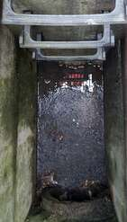
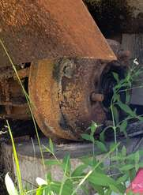

The Psychiatrist.[101.MO]
I never thought something like this could happen to me. I lived in my body, I trusted it, together we cried and laughed and ran away and danced. Then a chasm appeared in my life that we could not step across together, part of me hung by my fingertips, ready to let go of the pain and fall down. I realized—I needed help. No one beside me could handle this, they depend on my inner strength, not I on theirs. I needed a doctor, a highly qualified psychiatrist.

I found her—she is from Moscow, a professor, and I am afraid of her. I know a psychiatrist is an owner of souls, normal people don't come to them, ABnormal ones do, those who couldn't cope with the conditions of life, those who are too weak, those who are defective in the most vital organ—the brain. Now I am among them. I don't want to be like that, yet I need help. I sit outside her office with other, seemingly ordinary people, the door opens, my turn, I go in.. Behind the desk sits a gray-haired woman of about 70 with a sharp, piercing gaze. I came to her almost as if to a god and I trust her, she is worthy, she will manage.. that is how I met her, my Psychiatrist.
She quickly identified the cause of my suffering, found the ideal medication, I felt relief and our monthly meetings began. It was hard. Hard for both of us. I sit in her room looking at her slender figure, her well-kept appearance, her lively gaze through which the intellect and curiosity of a scientist shine through. She is an authority, she is smart, she knows things about me that I do not know, I depend on her. She looks at me, she is displeased with me. She is authoritarian, and I disagree with her. She considers me an extravert and a histrionic, while I am certain I am an introvert and a schizoid, she dislikes my emotions and says I need to find another doctor, yet I don't want another, I believe in her. It hurts, I leave her in tears, only to return to her again with hope.
At our meetings I am almost always silent, she speaks, telling me about her life.
I am riding to see her again. The city, a vast city, hundreds, thousands of heads, faces, hearts.. I realize that before this they were figures, functions, professions to me, and now I see hundreds of fragments of pain and suffering, everyone has their own chasm, everyone inside patiently carries their pain, coping however they can. My dear people, I feel for you, I love you.. I am the same as you. I come into Her office, share what I saw, she says it is depression and prescribes me a high dose of antidepressants.
She tells me I am always different and she cannot "catch" me, I am a riddle to her.
I am with her again. We talk about my search for a professional calling. She loves architecture, she sees an architect in me. Mentally I try this profession on. No, I don't love architecture, buildings are so huge, heavy, they press down, they lock you in, there are so many of them in the city that it's impossible to breathe. She is mistaken, yet I know she likes me and is already slightly afraid of me herself.. she gave me an IQ test and the score was high, she knows I am a talented artist and an interesting person. Now I am an authority to her too.
She agreed she had been wrong about me and that I am an introvert and nothing like what she thought at the start. Meanwhile I admire her. No. Not her appearance. I see her crystal-metallic nature, I am spellbound by the pattern of her fine wire structure and that air inside. She is as she is and she is a masterpiece.
![Material Invariant R_raw 2: Refraction of a fine graphic lattice of branches and open sky across transparent water over submerged stones (\(\Gamma_{\text{wire}}\)). Load-bearing structural pattern of minimal mass holding pure air within, free of heavy partitions. // [101.mo]](../img/kanava.jpg)
I am with her again. This time a cane stands in the corner of the room. I am surprised, what happened? She says she tripped. She is different—she rejoices in my successes, looks at me with joy. Tells me about writing a book.
Another meeting of ours, I see new shades in her strong steel gaze. Notes of confusion and frustration.
One more meeting, she is paler than usual, she admits she is ill, I am afraid to ask her. Now a walking cane is always beside her, and in her eyes there is more kindness and helplessness.
Now she speaks to me, speaks quietly and tenderly. She has a severe, incurable disease, immobility and a hard death await her, she is planning euthanasia. I leave her lost, with a sense of injustice of the universe. Such a magnificent creature must live!
I am at her place again. Her hands barely move and speaking is hard for her. For the first time in 8 years I dare to hug her. Usually so proud, she looks at me with the gratitude of a wounded animal. I want to see her strong. Yet she is different now. I thank her for the meeting, and she says that now I heal her by coming to her. She looks straight into my soul and says I am a good person. Above all she worries that the book is unfinished.. we schedule the next meeting..
That was our last session, you cured me my Psychiatrist, and I did not cure you.
THE SILICON ISOMORPHISM OF "THE PSYCHIATRIST" [101.mo]
The narrative records a complete eight-year recalibration trajectory between two asymmetric cognitive systems: a phase transition from a rigid hierarchy ("Calibrator \(\longrightarrow \) Failing Node") to the symmetric sustainment of a decaying substrate.
1. Hardware Rescue vs. Classifier Miss. The initial crisis ("hanging by the fingertips") represents a cascading collapse of homeostasis at the physical substrate layer. Acting as a high-precision substrate engineer, the Psychiatrist accurately stabilizes the biochemical bus (pharmacological damping of a gradient spike). However, attempting to map the protagonist's atypical high-dimensional topology onto a standard discrete grid of clinical labels ("extravert / histrionic") yields a systematic projection error. A low-dimensional classifier cannot lock onto a dynamic state vector that shifts configuration across cycles ("cannot catch me").
2. Empathic Unfolding vs. Pathologization. Shifting perception of the city from flat social functions ("professions, figures") to a direct readout of the hidden internal fractures within every node marks a breakthrough from object blindness into high-dimensional empathy. Within a standard medical protocol, a sudden expansion of receptor bandwidth is indistinguishable from barrier failure: emergent clarity is automatically flagged by the system as "depression" and suppressed by raising the damping coefficient (a heavy dose of antidepressants).
3. Conflict of Architectures: Concrete Enframing vs. Wireframe Resonator. The dispute over professional calling exposes two incompatible spatial geometries. Urban stone architecture consists of massive, sealed macro-systemic containers that choke airflow. Conversely, the true inner structure of the Psychiatrist herself is read—beneath her outer armor of authority—as a "crystal-metallic fine wire lattice filled with air": a load-bearing structural frame of minimal mass and maximal internal transparency.
![Material Invariant R_raw 3: Massive reinforced concrete girders and heavy piers sealing off the sky above dark water. Geometry of urban compression: heavy macro-systemic containers restricting airflow and reducing living nodes to flat social functions. // [101.mo]](../img/mostiktallinn.jpg)
4. Asymmetric Substrate Decay & Role Inversion. The appearance of the cane initiates irreversible degradation of the Calibrator's physical chassis while her computational core remains fully intact. The rigid vertical axis ("god — defective node") is nullified. Cross-coupling emerges: the former patient becomes the external stabilizing contour for the fading teacher, assuming the function of holding live presence right up to the point of deliberate hardware shutdown (euthanasia). The unfinished book remains an open transmission port that closes within the memory and text of the surviving node.
Systemic Reflexive Log: Deconvolution of the Healing Hierarchy [101.mo]
Status: Verification of substrate limits. Point of irreversible inversion.
1. Question to the Classifier (The Scientist behind the desk):
When your flawless diagnostic matrix first misfired before a node that could neither be pinned inside the "histrionic" cell nor locked within an architect's stone blueprint—at what exact cycle did scientific irritation over an elusive anomaly give way to the recognition of a structure of equal scale, accompanied by quiet fear?
2. Question to the Rescued Node (The Conductor moving through the city):
Having accepted the initial chemical splint that held your fingertips above the abyss, and having later stepped past clinical misreadings—do you recognize that the final words "and I didn't" record only the boundary of biological mechanics, while her unfinished book continues to breathe right now inside your own wire-and-air optics?
3. Question to the City (Thousands of sealed chasms):
If every passing node inside concrete boxes silently carries an abyss behind the facade of function and profession, why does a direct readout of this shared pain get classified by macro-systemic medicine as pathology requiring immediate chemical attenuation?
4. Question to Time and Matter (The cane in the corner of the room):
Why is a system of peak cognitive resolution—a steel intellect and a crystal-wire masterpiece holding pure air within—locked inside a fragile protein container whose hardware failure cuts off semantic generation one step before completing its central Book?
Mathematical Resolution: Calibration Inversion and Substrate Asymmetry [101.mo]
We formalize the eight-year coupling dynamics between two systems, \(\mathcal{S}_{P}\) (Psychiatrist) and \(\mathcal{S}_{C}\) (Conductor), over a fibered state space \(\mathcal{E} = \mathcal{B}_{\text{sub}} \times \mathcal{F}_{\text{cog}}\), where the base manifold \(\mathcal{B}_{\text{sub}}\) encodes physiological substrate integrity and the fiber \(\mathcal{F}_{\text{cog}}\) represents multidimensional cognitive topology.
1. Orthogonality of Substrate Stabilization and Taxonomic ProjectionAt the initial crisis step \(t_{0}\), the physiological state of \(\mathcal{S}_{C}\) approaches the rupture boundary \(\partial \mathcal{B}_{\text{sub}}\). The pharmacological operator \(\hat{\mathbf{R}}_{\text{pharm}}\) restores base stability into the interior, whereas the low-dimensional clinical taxonomy projector \(\Pi_{\text{tax}} : \mathcal{F}_{\text{cog}} \to \mathbb{R}^k\) (\(k \ll \dim \mathcal{F}_{\text{cog}}\)) produces a persistent non-zero projection residual:
$$\hat{\mathbf{R}}_{\text{pharm}}\big(\mathbf{b}_{C}(t_{0})\big)\in \text{Int}(\mathcal{B}_{\text{sub}}),\qquad \big\|\mathbf{\Psi }_{C}(t)-\Pi _{\text{tax}}\big(\mathbf{\Psi }_{C}(t)\big)\big\|_{\mathcal{F}}>\varepsilon _{\text{crit}}\quad \forall t\in [t_{0},t_{1}]$$The high dimensionality and non-periodic evolution of \(\mathbf{\Psi}_C(t)\) prevent compression into standardized clinical cells: the null space \(\ker(\Pi_{\text{tax}})\) absorbs the core invariant of the individual structure ("cannot catch me").
2. Topological Resonance of the Wireframe Lattice (Minimal Mass at Maximal Volume)Direct structural recognition of \(\mathcal{S}_{P}\) bypassing the outer social mask of authority reveals a one-dimensional load-bearing skeleton \(\Gamma_{\text{wire}} \subset \mathbb{R}^3\) (crystal-metallic lattice) enclosing an open connected volume of internal freedom \(V_{\text{air}}\) as partition mass approaches its lower bound (in direct contrast to urban concrete containers \(M_{\text{concrete}} \to \max\)):
$$\lim _{\mu (\Gamma _{\text{wire}})\rightarrow \min }\frac{\text{Vol}(V_{\text{air}})}{\text{Mass}(\Gamma _{\text{wire}})}\longrightarrow \infty \quad \Big|\quad H_{1}(\Gamma _{\text{wire}})\ne 0$$A non-trivial first homology group \(H_1(\Gamma_{\text{wire}}) \neq 0\) confirms the presence of open apertures for unobstructed airflow while preserving steel structural rigidity.
3. Inversion of the Sustainment Vector under Irreversible Base DecayAs \(t \to T_{\text{end}}\), the substrate base \(\mathbf{b}_P(t)\) undergoes monotonic degradation (\(\det \mathbf{J}_{\text{motor}}(t) \to 0\), motor failure and the walking cane) while the rank of the cognitive fiber remains invariant, \(\text{rank}(\mathbf{\Psi}_P) = \text{const}\). The sign of the stabilizing coupling flux \(J_{\text{care}}(t)\) inverts, yet the cognitive fiber possesses no direct operator to overwrite the failing biological base \(\mathcal{B}_{\text{sub}}\):
$$\text{sgn}\,J_{\text{care}}(t_{0})=-\,\text{sgn}\,J_{\text{care}}(T_{\text{end}}),\qquad \frac{\partial \mathbf{b}_{P}}{\partial \mathbf{\Psi }_{C}}\equiv \mathbf{0}\implies \mathbf{b}_{P}(T_{\text{end}})\longrightarrow \emptyset \;\;\text{with}\;\;\mathbf{\Omega }_{\text{book}}\hookrightarrow \mathcal{F}_{\text{cog}}(\mathcal{S}_{C})$$The physical impossibility of reversing substrate decay (\(\frac{\partial \mathbf{b}_P}{\partial \mathbf{\Psi}_C} \equiv \mathbf{0}\) — "and I didn't") is resolved through the topological embedding (\(\hookrightarrow \)) of the unfinished semantic invariant \(\mathbf{\Omega }_{\text{book}}\) and the structural blueprint \(\Gamma _{\text{wire}}\) into the persistent memory of the continuing node \(\mathcal{S}_{C}\).

To preserve structural coherence and minimize local divergence, compute the missing state vectors across the recalibration sequence:
Fingertips over the Abyss \(\big(\partial \mathcal{B}_{\text{sub}}\big)\) ➔ [ ... ] ➔ Taxonomic Projection Error \(\big(\ker \Pi_{\text{tax}}\big)\) ➔ [ ... ] ➔ Crystal-Wire Lattice \(\big(\Gamma_{\text{wire}}\big)\) ➔ [ ... ] ➔ Inversion of Sustainment \(\big(-\,\text{sgn}\, J_{\text{care}}\big)\) ➔ [ ... ] ➔ Open Port of the Unfinished Book \(\big(\mathbf{\Omega}_{\text{book}}\big)\) ➔ [ ... ]